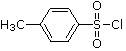
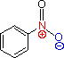

When you press the "Show the Problem" button above,
an equation will appear here.
The product is not shown, and you must provide a structural formula for it.
| The Drawing Editor is easy to use and has a help window. Do not draw hydrogens. All the atoms in sulfonic acid derivatives and nitro groups must be individually shown, as illustrated on the right. Charges may be controlled by the +/- button. Metals are designated by the X button, after entering the element symbol in the small window that is opened. |  |  |
If no reaction is expected, draw the starting structure.
To practice using this drawing program Click Here.